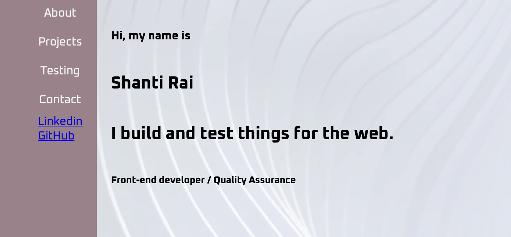

Personal Portfolio
Welcome Message
Welcome to my digital playground, where pixels meet passion and code transforms into creativity. As a front-end web developer, I've meticulously crafted this portfolio to showcase my journey through the world of web design and development. With a focus on clean aesthetics, seamless user experience, and responsive design, each project displayed here reflects my commitment to innovation and attention to detail. Dive into my portfolio and explore how I blend technology with visual storytelling to create engaging digital experiences. Join me on this journey of discovery and innovation at [Your Name]'s Portfolio.